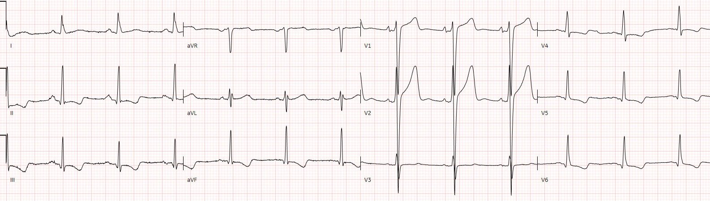
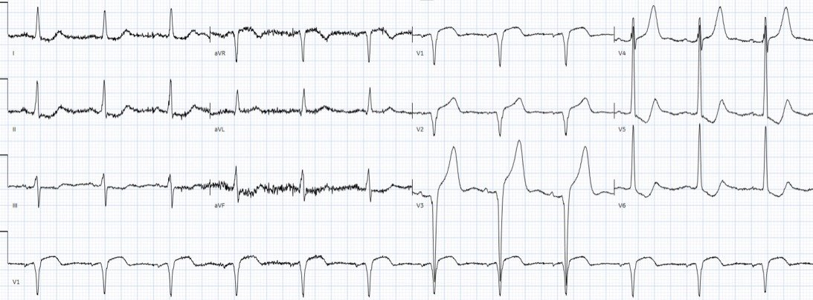
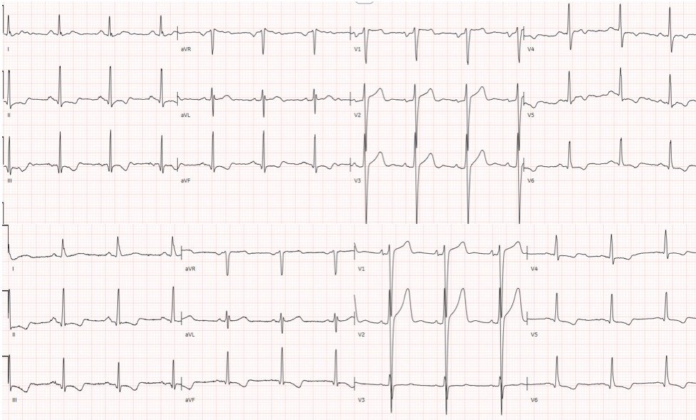
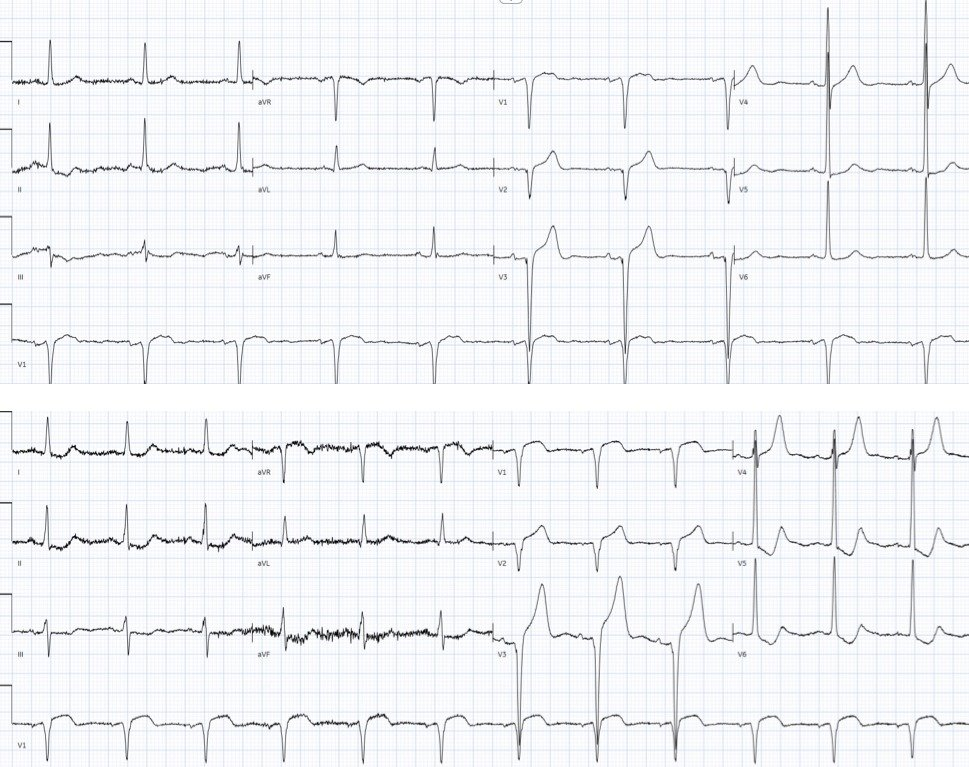
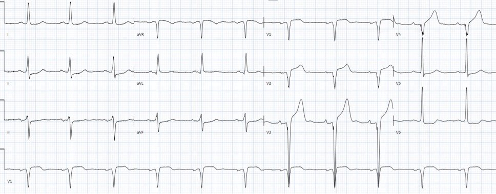
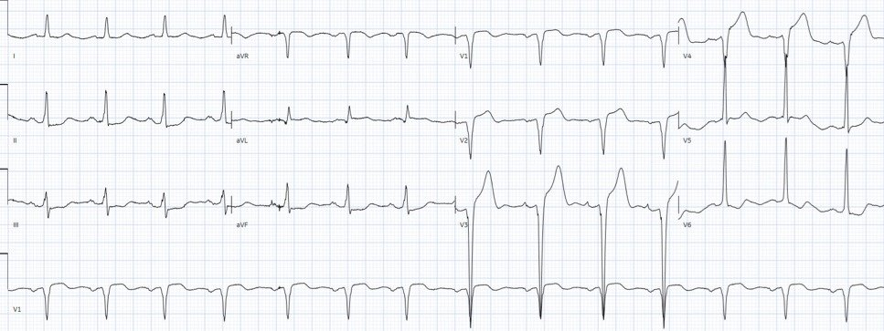
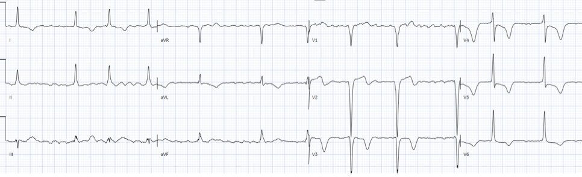
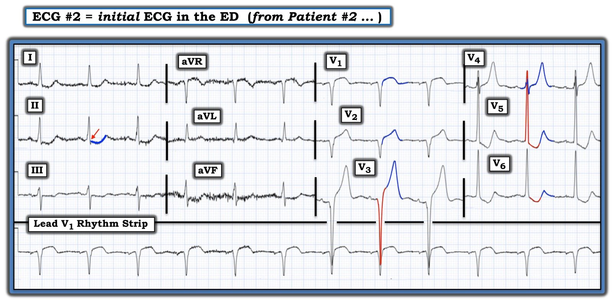

29/07/2022 — Hai bệnh nhân đau ngực và có LVH: cả tiêu chuẩn STEMI lẫn tiêu chuẩn Armstrong đều không thể xác định tắc mạch hay tái tưới máu
Bản dịch tiếng Việt của bài "Two patients with chest pain and LVH: Neither STEMI criteria, nor Armstrong criteria, can identify occlusion or reperfusion" – Dr. Smith’s ECG Blog. Giữ nguyên toàn bộ 9 hình ảnh của bản gốc.
Tác giả: Jesse McLaren
Hai bệnh nhân
đến khám vì đau ngực và có phì đại thất trái (LVH) trên điện tâm đồ.
Bệnh nhân 1: 65 tuổi, có
đau ngực bên trái trong một giờ


Bệnh nhân
2: 70 tuổi, đau ngực trong 30 phút kèm buồn nôn và vã mồ hôi


Bạn nghĩ sao? Làm thế nào để biết ai bị nhồi máu cơ tim do tắc (Occlusion MI, OMI)?
Tiêu chuẩn STEMI có giúp được không?
Cả hai đều có
ST chênh lên (STE) vùng trước ở hai chuyển đạo liên tiếp vượt ngưỡng tiêu chuẩn STEMI, nhưng cả hai cũng đều có
LVH. LVH tạo ra sóng R cao ở các chuyển đạo
bên trái kèm ST chênh xuống và sóng T đảo ngược thứ phát, và sóng S sâu
ở các chuyển đạo bên phải kèm ST chênh lên và sóng T cao thứ phát. Ở bệnh nhân thứ nhất, các chuyển đạo bên trái không có sóng R quá cao, nhưng các chuyển đạo bên phải lại có sóng S sâu.
Vì
tiêu chuẩn STEMI chỉ xét biên độ ST chênh lên, nó không thể phân biệt
giữa các nguyên nhân ST chênh lên thứ phát với nguyên phát hoặc chồng thêm, và bỏ qua các dấu hiệu khác của tắc mạch vành cấp. Thay vào đó,
mô hình này đơn giản định nghĩa STEMI là ST chênh lên khi không có LVH. Vì vậy, theo định nghĩa, tiêu chuẩn STEMI không thể
áp dụng cho các điện tâm đồ này, và không thể xác định điện tâm đồ nào có tắc mạch vành cấp. Armstrong
đề xuất dùng ngưỡng STE/S > 25%, nhưng ngưỡng này sẽ xếp cả hai điện tâm đồ này là
âm tính: ở ca thứ hai, V3 có sóng S 28mm, nghĩa là cần 7mm
STE trong khi chỉ có 4. (xem bài này để bàn luận thêm)
Điện tâm đồ cũ có giúp được không?
Dưới đây là hai
ca, điện tâm đồ cũ trước, điện tâm đồ mới sau:
Bệnh nhân 1:


Nếu chỉ
nhìn vào đoạn ST và sóng T, bạn có thể lo ngại về ST chênh lên
tăng thêm và sóng T cao hơn ở V1-2, nhưng những thay đổi này tương xứng với điện thế
lớn hơn ở các chuyển đạo đó. LVH có thể thay đổi theo thời gian, và cũng có thể bị ảnh hưởng bởi
vị trí đặt điện cực: điện tâm đồ cũ đặt điện cực cao hơn, với sóng P gần như âm hoàn toàn
ở V1 và sóng P hai pha ở V2. Mặt khác, điện tâm đồ trước đó cho thấy
sóng T đảo ngược ở vùng dưới-bên là cũ, và chúng vẫn không đối xứng và
tương xứng với phức bộ QRS. Vì vậy, điện tâm đồ mới cho thấy LVH với thay đổi
tái cực thứ phát, không có bằng chứng điện tâm đồ của OMI.
Bệnh nhân 2:


Điện tâm đồ mới có
STE ở V1-3 lớn hơn với cùng điện thế, nhưng còn có nhiều dấu hiệu OMI khác: 1) trong khi sóng Q ở V1-3 là cũ thì có
mất sóng R ở V4, 2) có sóng T tối cấp ở V3-4, và 3) có ST chênh xuống ở vùng dưới-bên
đặc biệt ở V5-6, là thay đổi soi gương của ST chênh lên vùng trước.
(Hãy so sánh hình ảnh tăng gánh LVH điển hình ở bệnh nhân 1 với sóng T
đảo ngược không đối xứng, với thay đổi soi gương do thiếu máu cục bộ ở bệnh nhân 2 với ST chênh xuống
kèm sóng T dương).
Họ được xử trí thế nào? Tiêu chuẩn STEMI không nhận ra được tắc mạch và tái tưới máu
Bệnh nhân 1 có
các điện tâm đồ liên tiếp không thay đổi và troponin liên tiếp bình thường
(4 và 5 ng/L, bình thường < 16 ở nữ và <26 ở nam). Bệnh nhân
được cho xuất viện và khỏe mạnh khi tái khám.
Bệnh nhân
2 được xịt nitro ba lần, triệu chứng cải thiện. Dưới đây là điện tâm đồ đầu tiên
và điện tâm đồ ghi lại:


Điện tâm đồ này được
diễn giải là các thay đổi ST đã hồi phục, và với troponin ban đầu 13ng/L,
bệnh nhân được theo dõi với kế hoạch chụp mạch vành không khẩn dựa trên chẩn đoán “STEMI thoáng qua”. Nhưng hãy để ý rằng đã
mất hoàn toàn sóng R ở V4, vẫn còn sóng T tối cấp, và vẫn còn
ST chênh xuống ở vùng dưới-bên. Mặc dù triệu chứng cải thiện, vẫn chưa có tái tưới máu.
Bốn giờ sau,
troponin xét nghiệm lại là 3500ng/L và một điện tâm đồ khác được ghi, khi bệnh nhân báo đau nhiều hơn:


Vẫn còn sóng T
tối cấp ở V3-4 và vẫn còn ST chênh xuống ở vùng dưới-bên, và nay ST chênh lên nhiều hơn
ở V3-4. Phòng thông tim (cath lab) được kích hoạt, sau nhiều giờ nhồi máu lẽ ra có thể phòng tránh, và phát hiện đúng điều mà điện tâm đồ đầu tiên đã cho thấy: tắc LAD đoạn gần. Dù troponin đầu tiên nằm trong giới hạn bình thường, giá trị đỉnh là 33.000ng/L.
Điện tâm đồ lúc ra viện cho thấy sóng T đảo ngược ở các chuyển đạo trước tim, chỉ điểm tái tưới máu:


Điều cần nhớ
1. LVH
tạo ra các thay đổi ST và sóng T thứ phát, có thể thay đổi theo thời gian
2.
Tiêu chuẩn
STEMI được định nghĩa khi không có LVH nên không giúp xác định OMI khi có LVH
3.
Các
dấu hiệu khác của OMI gồm mất sóng R, ST chênh lên không tương xứng, sóng T
tối cấp, và ST chênh xuống soi gương
4.
Hết
triệu chứng không đồng nghĩa với tái tưới máu, và đoạn ST hồi phục không đồng nghĩa với sóng T đảo ngược do tái tưới máu
5. Troponin ban đầu có thể bình thường, triệu chứng có thể hết và bệnh nhân có thể có “STEMI thoáng qua”, tất cả trong khi OMI vẫn đang diễn ra, và dựa vào những đặc điểm này có thể dẫn đến chậm trễ tái tưới máu

===================================
BÌNH LUẬN CỦA TÔI, bởi KEN GRAUER, MD (29/7/2022):
===================================
Một bài tuyệt vời của BS. McLaren về khó khăn khi chẩn đoán OMI cấp ở bệnh nhân có LVH rõ trên điện tâm đồ. Như BS. McLaren đã nêu — tiêu chuẩn STEMI “thông thường” đơn giản là không thể áp dụng, vì những thay đổi mà LVH gây ra về kích thước QRST và hình dạng.
- Với hy vọng bổ sung thêm góc nhìn cho 2 ca bệnh sâu sắc được mô tả ở trên — tôi tập trung bình luận vào một số đặc điểm “định tính” không dựa trên con số vốn đã giúp ích cho tôi.
- Để minh họa các đặc điểm này — tôi đã sao lại và đánh dấu trong Hình 1 điện tâm đồ ban đầu của Bệnh nhân 2 ( = điện tâm đồ thứ 2 ở trên) của BS. McLaren.
Trong Bình luận của tôi ở cuối bài ngày 18 tháng Bảy năm 2022 trên Dr. Smith’s ECG Blog — tôi đã nhấn mạnh điều tôi cho là 3 yếu tố quan trọng nhất cần xem xét khi đánh giá thay đổi ST-T về khả năng OMI ( = tắc mạch vành cấp). 3 yếu tố này là: i) Hình dạng; ii) Tính tương xứng; và, iii) Vị trí.
- Vì không có tiêu chuẩn định lượng đáng tin cậy để nhận diện OMI cấp ở bệnh nhân có LVH rõ — chúng ta cần tập trung chú ý vào những manh mối khác. “Cốt lõi” của việc áp dụng các yếu tố Hình dạng — Tính tương xứng — Vị trí là chúng ta tìm những thay đổi hình dạng QRST “lẽ ra không có ở đó”.
- Sách giáo khoa không có tiêu chuẩn cho việc này. Thay vào đó — chúng ta dùng trực giác từ “ngân hàng trí nhớ” gồm hàng trăm (hàng nghìn, hoặc hơn) bản ghi đã đọc qua bao năm hành nghề — để đi đến kết luận về xác suất tương đối rằng một điện tâm đồ ở bệnh nhân có LVH nền và triệu chứng mới có (hay không) khả năng đang diễn tiến một biến cố tim cấp.
- Tôi thích bắt đầu bằng cách tìm 1 hoặc 2 chuyển đạo đó trên bản ghi 12 chuyển đạo mà tôi có thể khá chắc chắn rằng hình dạng QRST ở một bệnh nhân có triệu chứng mới là không “bình thường”.
- Sau đó tôi xem các “chuyển đạo lân cận” — để xem những thay đổi kém rõ ràng hơn có khả năng phản ánh sự “tiếp nối” của các thay đổi cấp nghi ngờ hay không.
- Nói chung — càng nhiều chuyển đạo có thay đổi cấp nghi ngờ trên điện tâm đồ 12 chuyển đạo — thì khả năng một quá trình cấp đang diễn tiến càng lớn.
- Trong phần bàn luận ở trên của BS. McLaren — anh minh họa cách thông tin bổ sung (tức là so sánh với các bản ghi cũ và/hoặc bản ghi liên tiếp; giá trị troponin; đối chiếu với đáp ứng lâm sàng của bệnh nhân với điều trị) — có thể hỗ trợ xác định bản ghi LVH nào cho thấy một quá trình cấp. Nhưng lúc đầu, trước khi có được thông tin bổ sung này — chúng ta thường phải đánh giá tình huống chỉ từ điện tâm đồ ban đầu.


SUY NGHĨ CỦA TÔI về điện tâm đồ #2:
Điện tâm đồ trong Hình 1 là điện tâm đồ ban đầu được ghi tại khoa cấp cứu — ở một người 70 tuổi đến viện vì đau ngực 30 phút kèm buồn nôn và vã mồ hôi.
- Có nhiễu đường nền rõ ở các chuyển đạo chi. Dù vậy — bản ghi vẫn đọc được.
- Nhịp là nhịp xoang khoảng ~75 lần/phút. Mọi khoảng và trục QRS trung bình trên mặt phẳng trán đều bình thường.
- Có LVH rõ (sóng S rất sâu ở V3>25 mm; sóng R rất cao ở V5,V6 lần lượt trên 30 và 20 mm).
- Có phức bộ QS ở các chuyển đạo V1,V2,V3.
- Vùng chuyển tiếp hơi muộn — sóng R trở nên cao hơn độ sâu sóng S ở giữa chuyển đạo V4 và V5.
- Các dấu hiệu điện tâm đồ đáng chú ý nhất là các dấu hiệu ST-T (Xem bên dưới).
Ảnh hưởng của LVH trên điện tâm đồ:
Bệnh nhân có LVH rõ thường biểu hiện thay đổi ST-T dạng “tăng gánh” thất trái ở một hoặc nhiều chuyển đạo.
- Không phải mọi bệnh nhân có LVH được xác nhận bằng siêu âm tim đều biểu hiện “tăng gánh” thất trái trên điện tâm đồ. Các nghiên cứu Framingham cho thấy tiên lượng dài hạn bị ảnh hưởng bất lợi khi cả thay đổi điện thế lẫn thay đổi tái cực kiểu “tăng gánh” cùng có trên điện tâm đồ.
- Thay đổi ST-T dạng “tăng gánh” thất trái thường gặp nhất ở một hoặc nhiều chuyển đạo bên (tức là ở chuyển đạo I, aVL; và/hoặc V4, V5, V6). Điển hình — đoạn ST đi xuống từ từ, rồi đi lên nhanh hơn ở cuối đoạn ST.
- Một số bệnh nhân LVH (đặc biệt nếu trục mặt phẳng trán thẳng đứng) — cũng biểu hiện thay đổi ST-T dạng “tăng gánh” thất trái ở các chuyển đạo dưới.
- Một số bệnh nhân có sóng S vùng trước đặc biệt sâu — biểu hiện hình ảnh “soi gương” (mirror-image) của “tăng gánh” thất trái dưới dạng ST-T dương, thường kèm ST chênh lên ít nhiều ở các chuyển đạo trước này.
- Ảnh hưởng chính khác mà LVH gây ra trên điện tâm đồ là sự gia tăng các lực hướng sang trái và ra sau có thể lấn át các lực hướng ra trước vốn có — với “kết quả chung” là tăng tiến sóng R bị chậm (đôi khi tới mức tạo ra phức bộ QS ở một hoặc nhiều chuyển đạo trước).
- LƯU Ý: Tôi đã nhiều lần ôn lại cách tiếp cận của mình trong đánh giá LVH và “tăng gánh” thất trái trên điện tâm đồ trong Dr. Smith’s ECG Blog (Để biết thêm — XEM Bình luận của tôi trong bài ngày 20 tháng Sáu năm 2020 và bài ngày 27 tháng Tư năm 2019 — chỉ kể ra 2 trong số các bài đó).
Tôi thấy điều gì đáng lo ngại trên điện tâm đồ #2?
Để làm rõ giới hạn của phức bộ QRS ở chuyển đạo V3 và V5 — tôi đã viền các phức bộ này bằng màu ĐỎ trong Hình 1. Tôi cũng đã viền các sóng ST-T đáng lo ngại bằng màu XANH trong hình này.
- Mặc dù có phức bộ QS ở các chuyển đạo trước V1,V2,V3 — tôi không chắc chắn từ một bản ghi duy nhất này liệu đây là hậu quả của nhồi máu trước vách vào một thời điểm nào đó — hay — chỉ đơn giản phản ánh các lực hướng sang trái và ra sau chiếm ưu thế do LVH rõ, làm mất hết sóng R vùng trước. Việc phức bộ QRS nhỏ ở chuyển đạo V4 đẳng điện (được viền XANH trong Hình 1) — rồi tiếp theo là sóng R cao vọt ở chuyển đạo V5 gợi ý cho tôi rằng các phức bộ QS ở chuyển đạo trước có lẽ là hậu quả của LVH.
- Theo cách tiếp cận tôi đề xuất là TÌM TRƯỚC TIÊN 1 hoặc 2 chuyển đạo mà tôi có thể khá chắc chắn rằng sóng ST-T “không bình thường” — tôi tập trung vào sóng T ở chuyển đạo V4. Dù chuyển đạo V4 này rõ ràng là một “chuyển đạo chuyển tiếp” giữa QRS âm rõ rệt ở chuyển đạo V3 — và QRS dương rõ rệt ở V5 — ở người 70 tuổi có đau ngực mới này, tôi cho rằng KHÔNG thể nào sóng T ở chuyển đạo V4 là bình thường. Sóng T này nhọn, cao hơn gấp đôi sóng R ở chuyển đạo này — và có đáy rộng. Ở một bệnh nhân có triệu chứng mới — tôi diễn giải sóng T ở chuyển đạo V4 này là tối cấp cho đến khi chứng minh được điều ngược lại!
- Chuyển sang các “chuyển đạo lân cận” — dù phần đầu của đoạn ST chênh xuống ở chuyển đạo V5 và V6 (được viền ĐỎ) có thể phù hợp với “tăng gánh” thất trái — KHÔNG thể nào phần cuối sóng T dương, cao và nhọn ở chuyển đạo V5 là bình thường. Do đó — tôi cho rằng phần cuối sóng T dương nhỏ nhưng vẫn nhọn bất thường ở chuyển đạo V6 có lẽ là sự lan rộng thêm của cùng quá trình đang diễn ra.
- “Chuyển đạo lân cận” còn lại của sóng T tối cấp ở chuyển đạo V4 — là chuyển đạo V3. Và dù với sóng S vùng trước tăng rõ do LVH, thường thấy sóng ST-T dương khá cao ở các chuyển đạo trước có điện thế tăng đó — sóng T nhọn cao 15 mm ở chuyển đạo V3 (được viền XANH) rất giống hình ảnh của sóng T tối cấp ở chuyển đạo V4.
LƯU Ý: Như vậy đã có 4 sóng T có khả năng tối cấp liên tiếp (ở chuyển đạo V3,V4,V5,V6) ở bệnh nhân 70 tuổi có đau ngực mới này. Biết điều này đã hạ thấp “ngưỡng” của tôi khi đánh giá hình dạng sóng ST-T ở các chuyển đạo còn lại:
- Sóng T ở chuyển đạo V2 (được viền XANH) trông “quá đầy đặn” (hypervoluminous) so với QRS tương đối nhỏ ở chuyển đạo này.
- Đoạn ST ở chuyển đạo V1 có chênh lên và dạng vòm (coving) bất thường (gần như là hình ảnh soi gương “reciprocal” của ST chênh xuống dạng lõm (scooped) ở các chuyển đạo ngực bên V5,V6).
- Sóng ST-T dẹt kín đáo ở các chuyển đạo chi III và aVF. Dù đây là thay đổi không đặc hiệu — tôi cho rằng hình dạng của sóng ST-T ở chuyển đạo II (được viền XANH) cùng với điểm J chênh xuống bất ngờ ở chuyển đạo này (mũi tên ĐỎ) — là bất thường rõ ràng.
ĐIỀU CỐT LÕI: Như BS. McLaren đã nêu — nhận ra OMI cấp ở bệnh nhân có LVH rõ thường cực kỳ khó khăn. Dù vậy — trước khi tôi “xem đáp án” — tôi cho rằng các đặc điểm định tính không dựa trên con số nêu trên ở điện tâm đồ #2 gợi ý mạnh OMI cấp cho đến khi chứng minh được điều ngược lại!
- Hầu như tất cả các chuyển đạo trên bản ghi này đều có bất thường vượt quá mức có thể giải thích bằng LVH đơn thuần — và, với bệnh sử đau ngực mới — tôi nghi ngờ sóng ST-T tối cấp ở cả 6 chuyển đạo ngực.
- Tôi cho rằng sóng T ở các chuyển đạo ngực (đặc biệt ở chuyển đạo V3 đến V5) có hình ảnh kiểu de Winter — vì vậy dù có LVH rõ — tôi nghĩ tới “tắc LAD đoạn gần cấp” cho đến khi chứng minh được điều ngược lại.